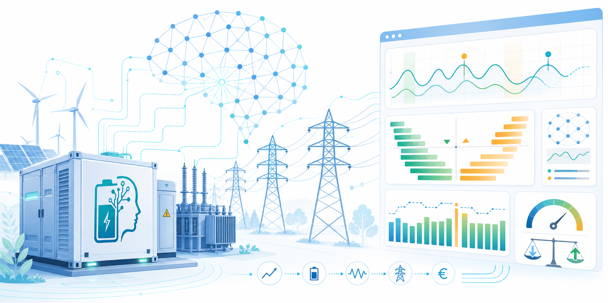

Open Technology Programme 2024 | NWO AES
Large-scale batteries for maximized profit
and congestion management using AI
BATT-AI program is dedicated to advancing battery intelligence to alleviate grid congestion, provide inertia support, and maximize its profitability in electricity market.

BATT-AI combines AI-based decision support, grid capacity modelling and inertia support to make large-scale batteries more useful for power grids.
The project develops methods for dynamic congestion management, inertia support and profitable multi-market operation, while accounting for battery degradation, uncertainty and state-of-health. By linking grid constraints, market signals and battery operational characteristics in one workflow, BATT-AI helps battery owners, system operators and technology providers unlock flexibility and maximize value.
BATT-AI project officially launched
The consortium has started work on AI-enabled battery intelligence for congestion relief, inertia provision and profitable multi-market operation.
Read moreProject funding
This project is funded by the Netherlands Organisation for Scientific Research (NWO) through the Open Technology Programme 2024. NWO is the national research council of the Netherlands and plays a central role in advancing scientific research and innovation across academia, industry and society.
Through competitive funding programmes, NWO supports high-quality, curiosity-driven and application-oriented research, fostering interdisciplinary collaboration and accelerating the translation of scientific knowledge into societal and economic impact.